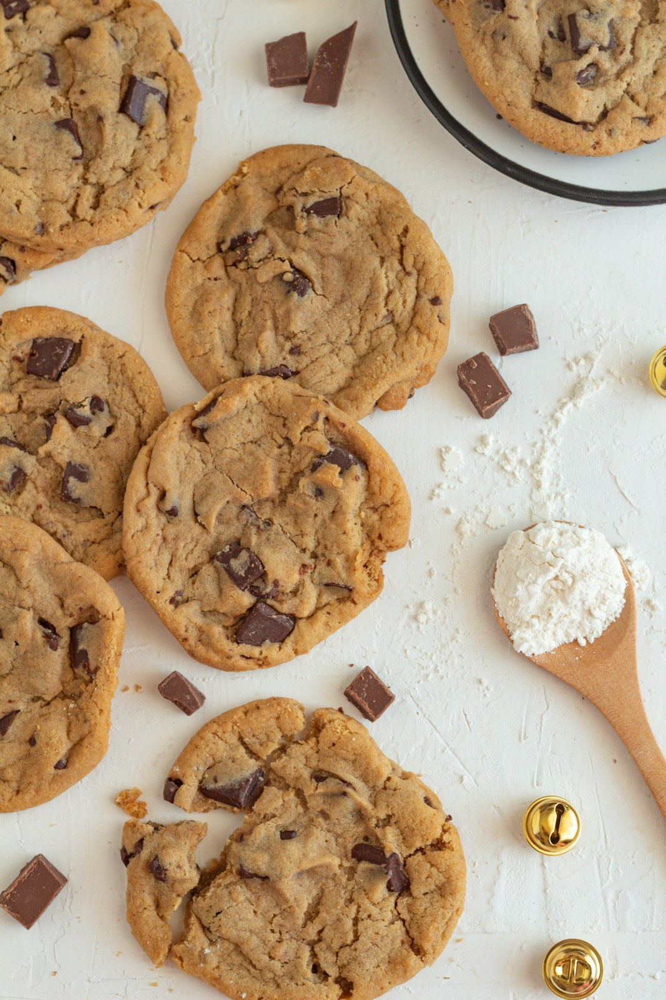

Croccanti fuori e morbidi dentro, li facciamo ogni mattina con burro vero, zucchero di canna e gocce di cioccolato fondente.
Dorati, golosi e finiti in un attimo.
Uno tira l'altro.
Provare per credere.